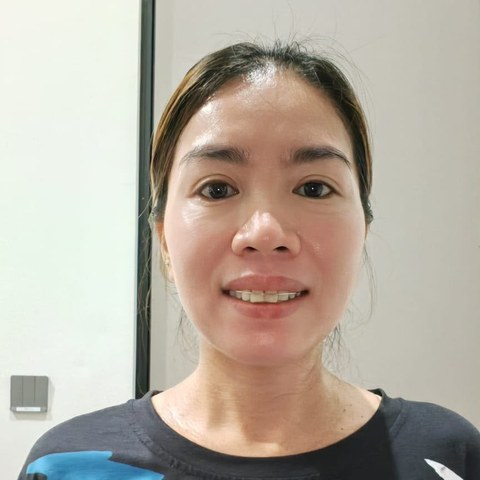
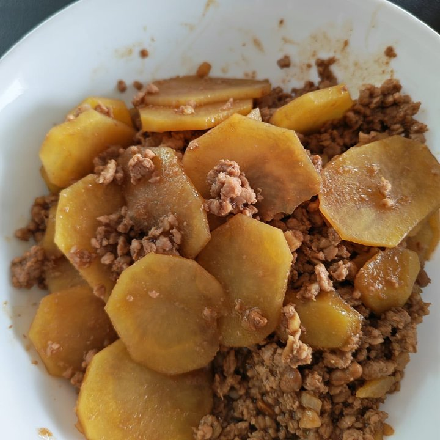

Filipino · 42 · Childcare, cooking & household
Nearly eleven years with one family. She took their child from four years old until he was grown enough not to need a helper, alongside an elderly family member, the cooking and the house. Eleven of her twelve years in Singapore were spent in that one home.
Trust signals
This signal is about length of service, confirmed against the employment records we reviewed. It does not carry a personal recommendation from an employer.
At a glance
The essentials
Available from
October 2026, any date that suits. Transfer within Singapore.
Eleven years, one family
March 2015 to February 2026 — a household of three in a four-room flat: their child from four years old, an elderly family member, the cooking and the house.
Her household now
A family of five in a four-storey landed house since February 2026 — two children of eight and ten, the cooking and the general household, as the only helper.
Why she is leaving
She says it plainly: a four-storey house run single-handed is more than one helper can carry properly. She would rather say so than let the standard of her work slip.
Children she has cared for
One child from four years old through eleven years. Two of eight and ten now. Infants and toddlers in her first year in Singapore.
Cooking
Part of every job she has held — Filipino home cooking and everyday Singapore food. Photographs below, all her own.
Pets
No experience with pets, and she says so herself — but she is willing to learn.
Best fit
A family in a flat or condominium with children of any age, who want the child, the cooking and the house in one pair of hands — and perhaps an elderly parent alongside. Not a large house run alone.
Twelve years — and eleven of them in the same home.
Rowena came to Singapore in June 2014. Almost all of what has happened since took place in one household.
March 2015 to February 2026 — a household of three in a four-room flat. Ten years and eleven months. She arrived when their child was four and stayed until he was grown, and through those years she also looked after an elderly member of the family, did the cooking and ran the house. It ended for the best reason there is: the child no longer needed a helper.
Her first year, 2014 to 2015. Two short placements before that one — about five months, then three. She left both, and in each case it was to do with how she was being treated rather than the work itself. She will tell you what happened if you ask, and what followed speaks for itself: she went into her next home and stayed eleven years.
February 2026 to now — a family of five in a four-storey landed house, two children of eight and ten, the cooking and the whole household, on her own. She has been there seven months and has asked to move. Her reason is the size of the job rather than the family: one helper, four storeys, two children and every meal. She would rather name that now than have a family discover it later.
Where she’d suit next. A flat or condominium with children of any age, and an elderly parent at home if there is one — that is the shape of the household she gave eleven years to. She cooks properly and has done so in every job. She has no experience with pets and says she is willing to learn.
Her employment history is available to interested families, with her consent.
Photographs Rowena took of her own cooking — beef with green peppers, a beef and potato stew, braised fish, lumpia, giniling, pork with potatoes, prawns in sweet soy, vegetable fritters and fried fish.

Tell us a little about your household and we’ll be in touch within 1–2 business days. We’ll only move forward if it feels like a genuine fit.